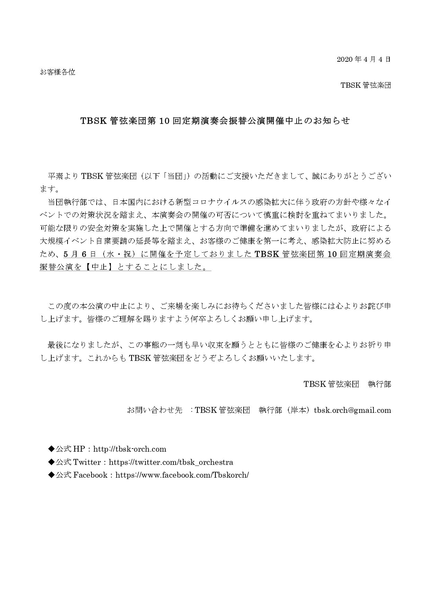

今後の演奏会のご案内
【中止】2020/04/12 第3回室内管弦楽団演奏会
{kind=link}
「レオノーレ」序曲 第3番/ベートーヴェン
ピアノ協奏曲 第20番/モーツァルト
6声のリチェルカーレ「音楽の捧げ物」より/J.S.バッハ＝ヴェーベルン
組曲「プルチネルラ」/ストラヴィンスキー
於：かつしかシンフォニーヒルズ モーツァルトホール
指揮：久世武志
ピアノ独奏：津布良佳奈
日時：2020年4月12日(日) 13:30開場 14：00開演
入場無料
TBSK室内管弦楽団第3回演奏会開催中止のお知らせ(2020/03/28)
4/12(日)に開催を予定しておりましたTBSK室内管弦楽団第3回演奏会は政府による大型イベント自粛要請をうけまして「中止」とさせていただきます。 公演を楽しみにされていた皆様には、深くお詫び申し上げますと共に、ご理解の程何卒よろしくお願い申し上げます。

【中止】2020/05/06 第10回定期演奏会振替公演

バレエ音楽「ペトルーシュカ」(1947年版)/ストラヴィンスキー
交響曲第4番「法悦の詩」/スクリャービン
交響曲第5番 Op.100/プロコフィエフ
於：ミューザ川崎シンフォニーホール
指揮：久世武志
日時：2020年5月6日(水・祝) 13:00開場 13:30開演
入場無料
【第10回定期演奏会振替公演について】
台風19号の影響で中止となった第10回定期演奏会の振替公演の開催が決定いたしました。
第10回のテーマは第1回以来の2回目となる「ロシア」です。皆様のご来場を心待ちにしております。
TBSK管弦楽団第10回定期演奏会振替公演開催中止のお知らせ(2020/04/04)
5/6(水・祝)に開催を予定しておりましたTBSK管弦楽団第10回定期演奏会振替公演は政府による大型イベント自粛要請をうけまして「中止」とさせていただきます。 公演を楽しみにされていた皆様には、深くお詫び申し上げますと共に、ご理解の程何卒よろしくお願い申し上げます。
2020/11/01 第11回定期演奏会

タルカス(管弦楽版)/K.エマーソン&G.レイク作 吉松隆編
オーケストラストーリーズ「となりのトトロ」/久石譲
交響曲第3番 Op.75/吉松隆
於：横浜みなとみらいホール
指揮：久世武志
「となりのトトロ」語り： 桂扇生 (落語家 真打)
日時：2020年11月1日(日) 昼公演